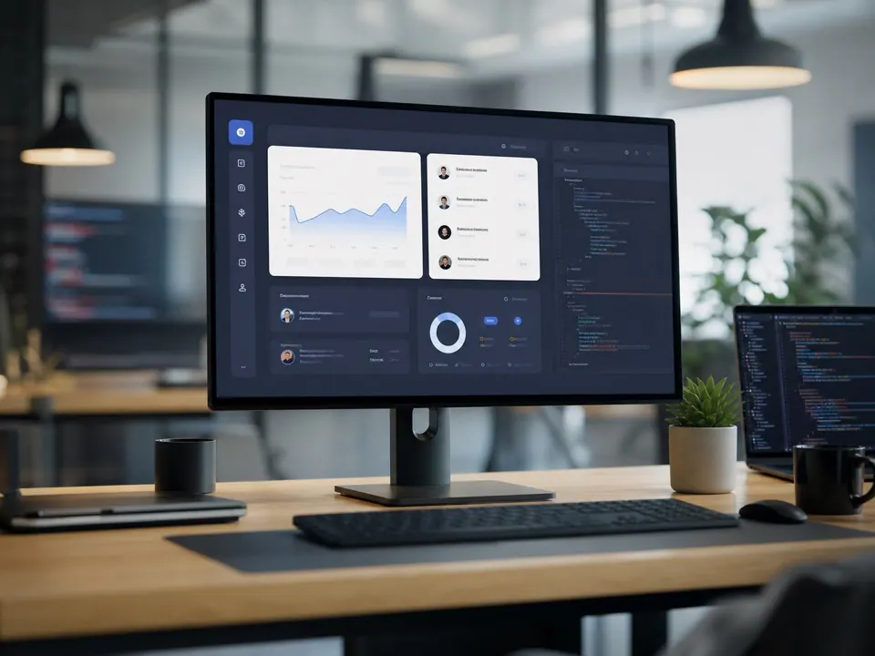
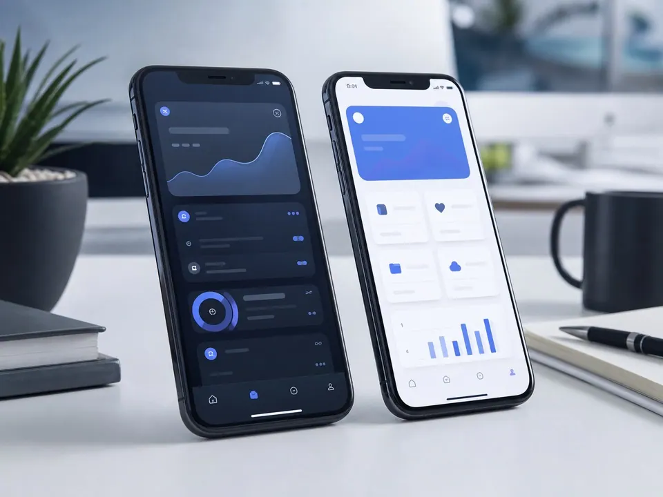
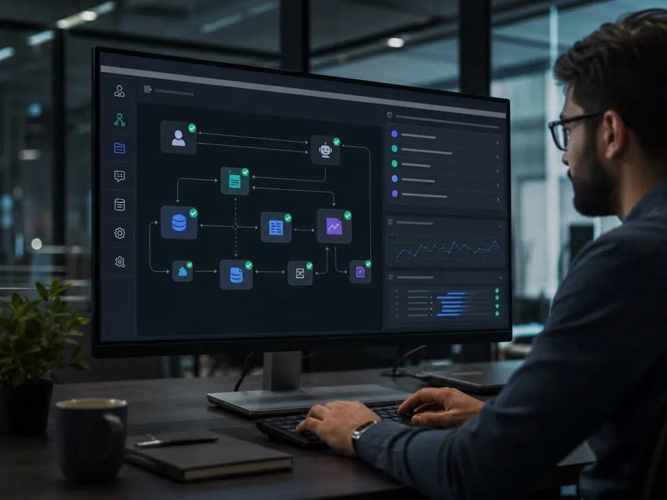
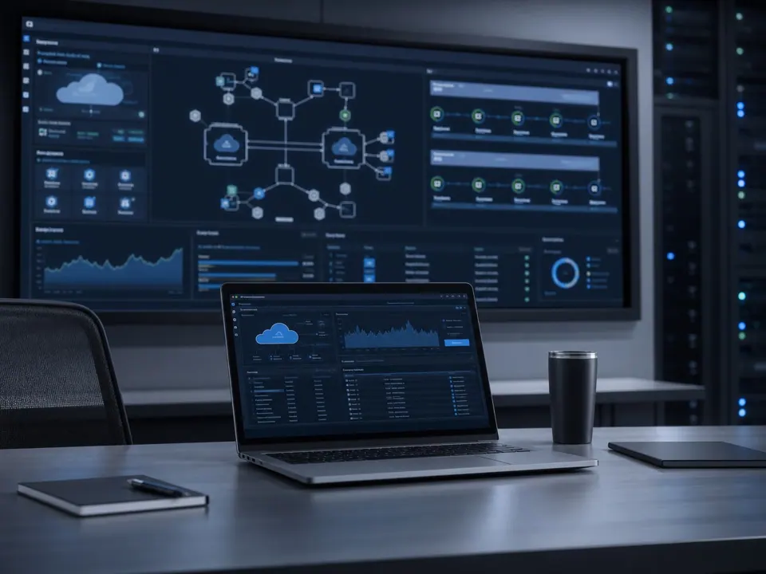
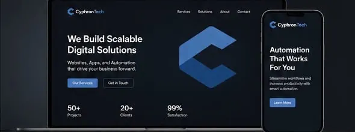
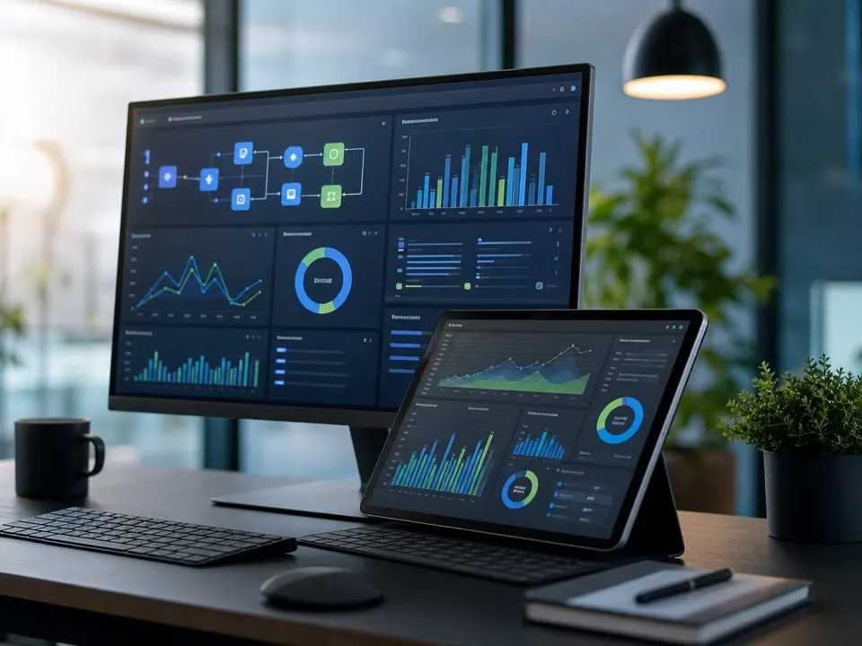
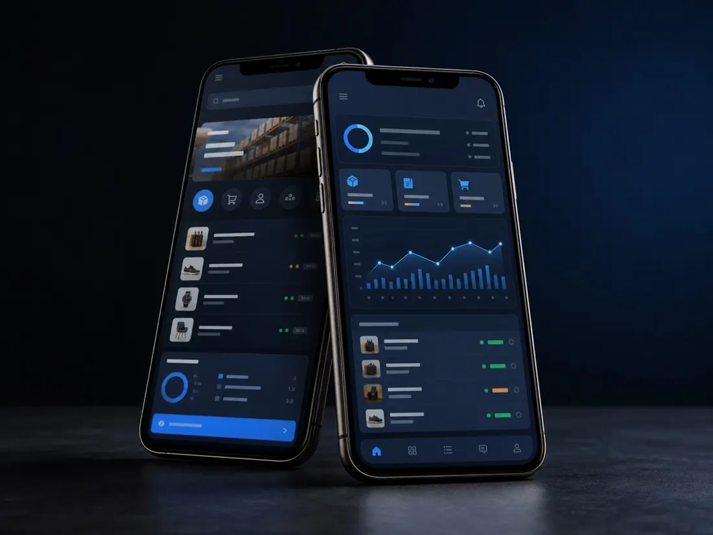
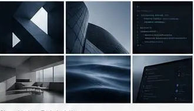

Web Platforms
Fast, accessible websites and SaaS portals with resilient front-end architecture and clean content workflows.
Explore service: Web PlatformsSoftware development agency
We design and build web platforms, mobile apps, AI automation, and cloud systems that help teams move faster.
From the first product brief to production support, our team covers the technical layers that keep software dependable.

Fast, accessible websites and SaaS portals with resilient front-end architecture and clean content workflows.
Explore service: Web Platforms
Native-feeling cross-platform applications with thoughtful user flows, API integration, and launch-ready QA.
Explore service: Mobile Apps
AI-assisted automation for CRM, finance, support, and internal teams using APIs, bots, and monitored jobs.
Explore service: Workflow Automation
Secure infrastructure, CI/CD pipelines, observability, and cost-aware deployment on modern cloud stacks.
Explore service: Cloud Engineering
User flows, wireframes, design systems, and polished product interfaces built for clear, intuitive experiences.
Explore service: UI/UX Design
Dashboards, reporting pipelines, and decision tools that turn fragmented business data into usable insight.
Explore service: Data ProductsWe work best with founders and teams that need a focused technical partner: clear scope, weekly shipping rhythm, visible risk tracking, and maintainable architecture.
Clarify the business goal, users, constraints, and success metrics before implementation starts.
Ship in tested increments with transparent demos, issue tracking, and engineering reviews.
Monitor adoption, improve performance, and document the system for long-term ownership.
AI-first approach
We add AI to a workflow only when it clearly helps.
CyphronTech uses AI where it improves a real workflow: reducing manual review, making operational data easier to read, helping teams respond faster, and turning product interactions into smarter experiences.
AI-assisted routing, summaries, checks, and workflow triggers that reduce repetitive work across operations.
Decision dashboards with anomaly alerts, plain-language insights, and smarter reporting for leadership teams.
Internal copilots, ticket triage, knowledge retrieval, and response drafting that keep support teams moving.
AI features embedded into customer journeys, from recommendations and guided capture to review and approval flows.
OrbitCart and FlowDesk are working builds by CyphronTech that are not yet live. The other case studies are illustrative concepts. None of them show real-world usage or client results.
OrbitCart is a wholesale commerce platform built around real-time inventory, supplier messaging, and AI reorder recommendations. The dashboard gives sales and warehouse teams a shared view of stock, order health, and fulfillment priorities.

We choose familiar, maintainable technologies that make products easier to ship, operate, and hand over.
Product names and logos are trademarks of their respective owners. They are shown only to identify technologies we work with and do not imply endorsement.
Process
Every engagement is structured around visible decisions, measurable delivery, practical AI opportunities, and code that can be owned by your team.
Requirements, architecture, data model, integrations, and release plan.
Design, engineering, QA, security checks, and weekly product demos.
Production deployment, monitoring, documentation, and improvement backlog.

One consistent visual language across architecture diagrams, code, and interface, so each project is easy to follow and to hand over.
Most focused builds take 4 to 10 weeks, depending on scope, integrations, content readiness, and review speed. Larger platforms are planned in phases.
Yes. We usually begin with a technical audit, then define the safest path for fixes, new features, modernization, or handover.
Yes. We can create product UX, interface design, component systems, and production implementation in one delivery workflow.
We can stay involved for monitoring, improvements, security updates, performance tuning, documentation, and support retainers.
We quote in writing before work starts: scope, fees, applicable taxes such as GST, the payment schedule, and any third-party costs like cloud hosting or licences. Extra work is agreed in writing before it begins. This website never takes payments. Cancellations and refunds are explained in our Refund Policy.
Yes. We build practical automation around real operations, including internal tools, workflow bots, AI-assisted review, reporting, and data pipelines.
Share what you need to launch, automate with AI, or improve. We will map the technical path and next steps.